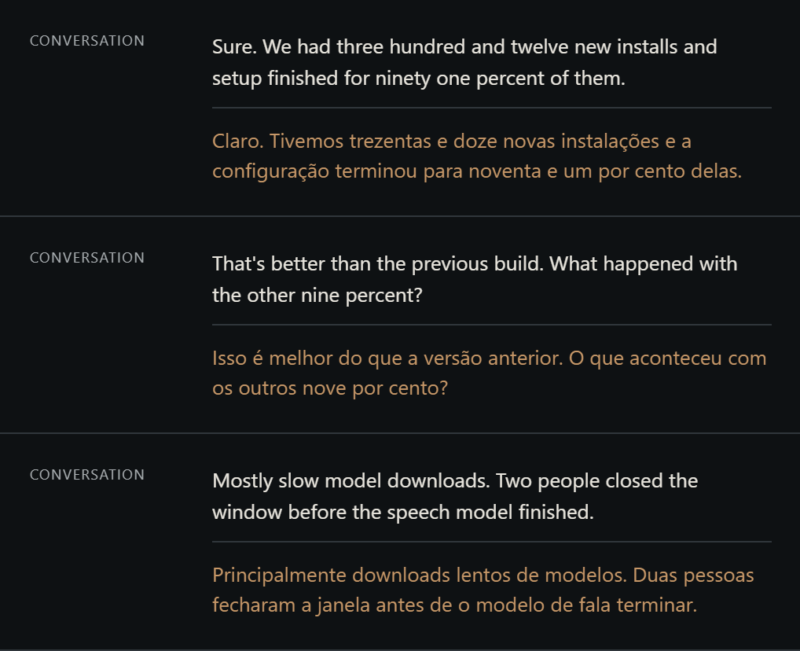

Meetings · live translation
Both sides of the call, transcribed and translated.
Your microphone
Computer audio
Two local recognizers
one per source, Vosk or Whisper
Transcript + translation
a local Ollama model adds the translation; the original is kept
Original, Translation or Both
choose what the companion shows
Pause either source
without muting your call
